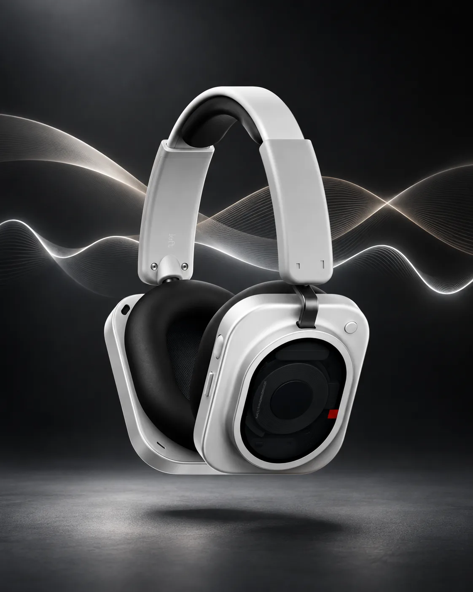
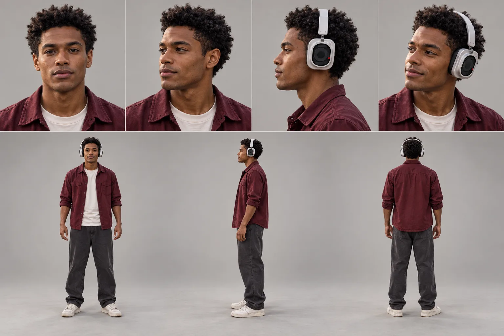
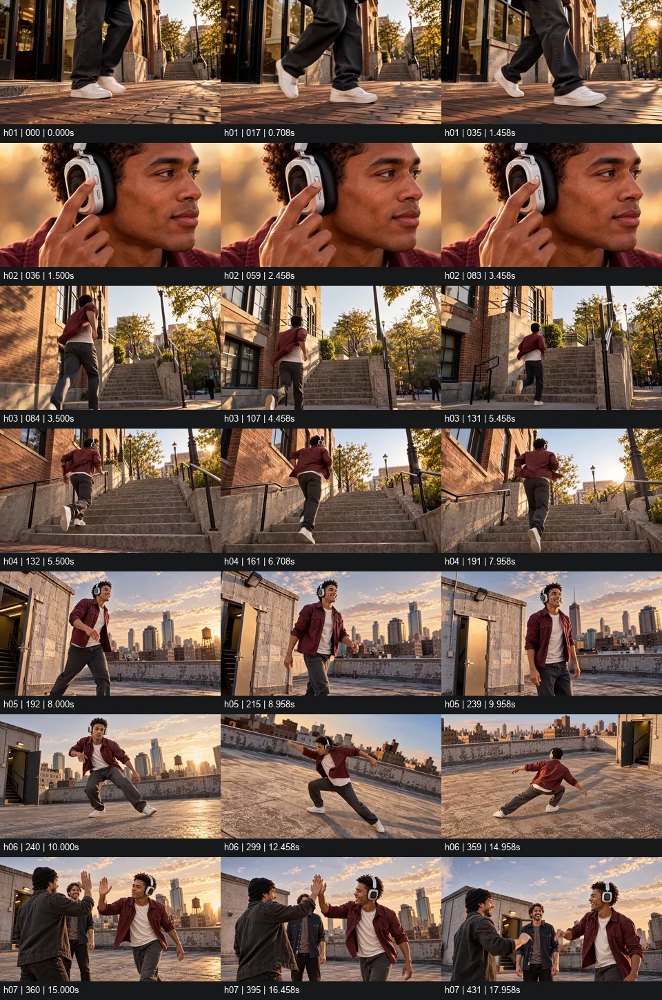
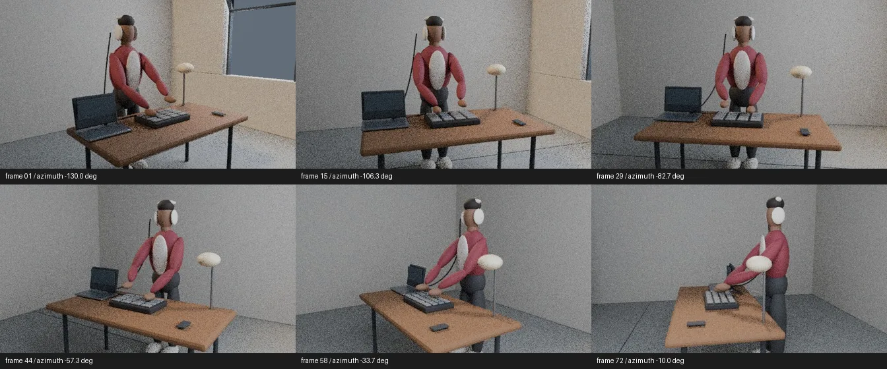

OWN YOUR TEMPO — 실사판
Nothing Headphone (1) Pro
헤드폰을 쓴 한 사람의 하루를 20초로 담은 AI 영상 광고 시안이에요. 거리·계단·옥상, 레코드점·인쇄소·세탁소·기차·농구장까지 장소와 이야기를 바꿔 가며 7편을 만들었고, 이 과정에서 얻은 결론으로 모션그래픽 본편을 다시 만들었어요.
v7 20초 · 1280×720 · 소리 있음 — AI 생성 영상, 끝부분의 공식 제품 사진은 직접 만든 3D 엔드카드로 교체
브리프
제품만 도는 콘티 v1·v3를 거절하고, TV 광고처럼 사람이 헤드폰을 쓰고 움직이는 장면으로 방향을 바꿨다.
키비주얼·캐릭터

가상 배우

v6 편집본
로컬 MiniMax-H3로 컷을 생성해 20초로 편집했다. 이후 v7, 장소가 다른 5편까지 만들며 카메라 움직임·장소 전환·제품 존재감을 계속 고쳤다.

City Beat 프리비즈
최소 30초 기준으로 다시 설계해, 정지 이미지와 Blender 공간 모형으로 32초 프리비즈를 먼저 만들었다.

결론
AI 실사는 인물 질감과 제품-변화의 인과가 약했다. 이 결론으로 제품의 실제 조작이 장면을 바꾸는 모션그래픽 본편을 새로 만들었다.
갤러리


실사 시안 8편
내가 한 일
사용한 도구
AI 생성 도구 사용 — AI 생성 도구를 쓴 부분은 작품마다 따로 표기했습니다.
모든 광고는 실제 브랜드와 관계없는 개인 비공식 콘셉트 작품입니다.
붉게 펼쳐지다
Carolina Herrera La Bomba Intensa
한 방울의 붉은 향이 실크 리본처럼 펼쳐져 나비형 병이 되고, 분사 한 번에 화면 전체가 붉은 나비로 번지는 32초 모션그래픽. 병의 '접힌 날개' 구조를 모션의 규칙으로 썼어요.
케이스 스터디 보기 →